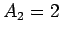
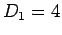

Cuando se pretende identificar cual es el valor ambiental que en el momento de estudio poseen las aguas superficiales cercanas al punto de vertido, es necesario señalar aquellas características del estado hídrico que se encuentren relacionadas con los procesos de vertedero y a partir de ellas cuantificar su valor. Sobre esta base se han seleccionado las siguientes:
- Usos del agua (A1)
- Tipo de masa de agua (A2)
- Presencia de especies animales o vegetales asociadas:
calidad de las aguas (A3)
La primera consideración que habrá que tener en cuenta es la siguiente: si la masa de agua superficial más cercana se encuentra en un radio superior a 900 metros, desde el borde de la masa de residuos, directamente se tomará valor ambiental 1 sin proceder a aplicar la expresión 2.3, donde A1, A2 y A3 son las características seleccionadas, indicadas anteriormente, para cuantificar el valor ambiental para este elemento del medio que alcanzará valores comprendidos entre 1 y 5. Su cuantificación se indica a continuación.
- A1:
- Usos del agua.2.4
- Sin uso para el hombre
- Uso hidroeléctrico, navegación y otros
- Industria
- Agricultura
- Uso para abastecimiento humano, recreativo incluidas zonas de baño y acuicultura
- A2:
- Tipo de masa de agua.2.5
- Curso de agua artificiales: canales, acequias y estantes
- Ríos de 3er orden o más y cursos de agua estacionales: ríos, arroyos y ramblas 
- Masas de aguas estacionales: lagunas y embalses
- Aguas marinas y ríos de y orden
- Masas de agua permanente: marismas y zonas intermareales, albuferas, salinas, estuarios y ramales de marea. Las zonas declaradas vulnerables en virtud de la Directiva 91/676/CEE y las zonas declaradas sensibles en el marco de la Directiva 91/271/CEE
- A3:
- Presencia de especies animales o vegetales
asociadas: calidad de las aguas.
- Aguas de calidad deficiente o mala
- Aguas en estado aceptable
- Aguas en buen estado
- Aguas en muy buen estado sin especies (flora y/o fauna) protegidas
- Aguas en muy buen estado con especies (flora y/o fauna) protegidas
Se entenderá que las aguas están en muy buen estado cuando:
- No existen alteraciones antropogénicas de los valores de los indicadores de calidad fisicoquímicas e hidromorfológicas correspondientes al tipo de masa de agua superficial, o existen alteraciones de muy escasa importancia, en comparación con los asociados normalmente con ese tipo en condiciones inalteradas.
- Los valores de los indicadores de calidad biológicos correspondientes a la masa de agua superficial reflejan los valores normalmente asociados con dicho tipo en condiciones inalteradas, y no muestran indicios de distorsión, o muestran indicios de escasa importancia.
Se considerará que las aguas están en buen estado si los valores de los indicadores de calidad biológicos correspondientes al tipo de masa de agua superficial muestran valores bajos de distorsión causada por la actividad humana, pero sólo se desvían ligeramente de los valores normalmente asociados con el tipo de masa de agua superficial en condiciones inalteradas.
Estas condiciones se englobarían dentro de la clase II en el Índice biótico BMWP o E4 para el modelo SCAF En cuanto a su aspecto se observan aguas ligeramente coloreadas, con espuma y ligera turbiedad.
Aguas en estado aceptable serán aquellas en las que los valores de los indicadores de calidad biológicos correspondientes al tipo de masa de agua superficial se desvían moderadamente de los valores normalmente asociados con el tipo de masa de agua superficial en condiciones inalteradas. Los valores muestran signos moderados de distorsión causada por la actividad humana y se encuentran significativamente más perturbados que en las condiciones correspondientes al buen estado.
Estas condiciones se englobarían dentro de la clase III en el Índice biótico BMWP o E3 para el modelo SCAF. En cuanto a su aspecto se observan aguas con apariencia de contaminación y color.
Aguas de calidad deficiente o mala serán aquellas en la que:
- Las aguas que muestren indicios de alteraciones importantes de los valores de los indicadores de calidad biológicas correspondientes al tipo de masa de agua superficial y en que las comunidades biológicas pertinentes se desvíen considerablemente de las comunidades normalmente asociadas con el tipo de masa de agua superficial en condiciones inalteradas, se clasificarán como deficientes.
- Las aguas que muestren indicios de alteraciones graves de los valores de los indicadores de calidad biológicos correspondientes al tipo de masa de agua superficial yen que estén ausentes amplias proporciones de las comunidades biológicas pertinentes normalmente asociadas con el tipo de masa de agua superficial en condiciones inalteradas, se clasificarán como malas.
Estas condiciones se englobarían dentro de las clases IV y V en el Índice biótico BMWP o E2 y E1 para el modelo SCAF. En cuanto a su aspecto se observan aguas negras con fermentaciones y olores.
Cuando se pretende identificar cual es la consideración ambiental que en el momento de estudio (visita a vertedero) poseen las aguas subterráneas del entorno del punto de vertido, es necesario destacar aquellas características del estado hídrico subterráneo que se encuentran relacionadas con los procesos del vertedero. Sobre esta base se han seleccionado las siguientes:
- Usos del agua (B1)
- Calidad de las aguas (B2)
La primera consideración que habrá que tener en cuenta es la siguiente: si la masa de agua subterránea se encuentra en un radio superior a 900 metros, desde el borde de la masa de residuos, directamente se tomará valor ambiental 1 sin proceder a aplicar la siguiente expresión 2.4, donde B1 y B2 son las características seleccionadas, indicadas anteriormente, para cuantificar el valor ambiental para este elemento del medio que alcanzará valores comprendidos entre 1 y 5. Su cuantificación se indica a continuación.
- B1:
- Usos del agua.2.6
- Sin uso para el hombre
- Otros usos no indicados a continuación
- Industria
- Agricultura
- Uso para abastecimiento humano
- B2:
- Calidad de las aguas.
- Aguas muy deficientes
- Aguas deficientes o malas
- Aguas en estado aceptable
- Aguas en buen estado
- Aguas en muy buen estado
Se considerará que las aguas tienen calidad muy deficiente si la concentración de nitratos es mayor de 50 mg/l y la de cloruros mayor de 250 mg/l.
Se considerará que las aguas tienen calidad deficiente o malas si se da una de las circunstancias que a continuación se indican:
- La concentración de cloruros se encuentra entre 25 y 250 mg/l y la de nitratos es mayor de 50 mg/l
- La concentración de cloruros es mayor de 250 mg/l y la de nitratos se encuentra entre 25 y 50 mg/l
Aguas en estado aceptable serán aquellas en las que se da una de las circunstancias que a continuación se indican:
- La concentración de cloruros se encuentra entre 25 y 250 mg/l y la de nitratos entre 25 y 50 mg/l
- La concentración de cloruros es mayor de 250 mg/l y la de nitratos es menor de 25 mg/l
- La concentración de cloruros es menor de 25 mg/l y la de nitratos mayor de 50 mg/l
Aguas en buen estado serán aquellas en las que se da una de las circunstancias que a continuación se indican):
- La concentración de cloruros es menor de 25 mg/l y la de nitratos se encuentra entre 25 y 50 mg/l
- La concentración de cloruros se encuentra entre 25 y 250 mg/l y la de nitratos es menor de 25 mg/l
Aguas en muy buen estado serán aquellas en las que la concentración de cloruros es menor de 25 mg/l y la de nitratos menor de 25 mg/l
Cuando se pretende identificar cual es la consideración ambiental que en el momento de estudio (visita a vertedero) posee el parámetro atmosférico únicamente se va a considerar una característica: la calidad del aire (C), con lo cual el valor ambiental de este elemento del medio vendrá dado por la expresión 2.5, que alcanzará valores comprendidos entre 1 y 5. Su cuantificación se indica a continuación.
- Muy mala
- Mala
- Admisible
- Buena
- Muy buena
A la hora de valorar esta característica se considerará que la calidad de la atmósfera es muy mala si el Índice de Calidad del Aire (ICA)se encuentra entre 201- 300. En estos valores y superiores se dispara la alerta y pueden producirse graves efectos de salud en la población y se detecta un olor cuya intensidad en el aire lo hace absolutamente desapropiados respirar.
La calidad de la atmósfera será mala si el ICA se encuentra entre 151 y 200. Un olor que llama la atención y que lo hace muy desagradable. Se observan efectos nocivos. Miembros de los grupos sensibles pueden sufrir serios efectos en la salud.
Calidad de atmósfera admisible: el ICA se encuentra entre 101 y 150. Es un olor tan débil que una persona normal podría detectarla si prestara atención porque de otra manera no se daría cuenta. Se ven afectados con alto riesgo aquellos enfermos de pulmón por las concentraciones de ozono, y enfermos coronarios por exposición a partículas respiratorias. La población general no se ve afectada.
Calidad atmosférica buena: el ICA se encuentra entre 50 y 100. Olor que ordinariamente podía no notarse por una persona normal pero si serían detectables por un inspector experimentado o por una persona muy sensible. Se pueden ver afectados algunos habitantes con síntomas de afección respiratoria por sensibilidad al ozono.
Finalmente se considerará que la calidad de la atmósfera es muy buena si el ICA se encuentra entre 50 y 0. Olor no detectable. Calidad del aire satisfactoria. No existe riesgo de contaminación.
El valor ambiental del suelo vendrá en función del entorno edáfico del punto de vertido y de sus características ambientales como lugar de reinserción. El vertedero es el que posee la capacidad de realizar las funciones de sustrato.
La valoración del suelo se basa en la interpretación de aquellas propiedades que confieren aptitud o vulnerabilidad del punto de vertido frente a las actividades humanas a la hora de ser reinsertado al medio.
En principio se puede considerar que el uso posterior a la clausura del vertedero depende de los usos del entorno. Las posibilidades de estos usos deben estar conferidas en el catastro de usos del suelo del lugar donde se encuentra ubicado el vertedero.
Una vez identificado cual va a ser el uso posible que puede darse al punto de vertido, es necesario identificar el valor ambiental que posee para ser reinsertado con ese uso. Para ello se tienen en cuenta las siguientes características:
- Usos del suelo
- Tipo de vegetación
- Cobertura vegetal
Para determinar el valor ambiental de este elemento del medio se procederá a aplicar la expresión 2.6, , y son las características seleccionadas, indicadas anteriormente. El valor ambiental alcanzará valores comprendidos entre 1 y 5. Su cuantificación se indica a continuación.
- D1:
- Usos de suelo.2.7
- No urbanizable
- Urbanizable industrial
- Urbanizable residencial
- Urbano industrial y urbanizable turístico 
- Urbano turístico y urbano
residencial

- D2:
- Tipo de vegetación.
- Espacios abiertos con escasa cobertura vegetal o erial
- Formación arbustiva y herbácea sin arbolado o cultivos de secano
- Formación herbácea con arbolado, cultivos de regadío o secano con árboles aislados
- Formación de matorral con arbolado, montes de repoblación joven
- Formaciones de arbolado denso, monte autóctono o de repoblación bien asentado .
- D3:
- Cobertura vegetal.
- Entre el 1 y el 5

- Entre el 6 y el 25
- Entre el 26 y el 50
- Entre el 51 y
el 75
- Más del 76
- Entre el 1 y el 5
La población está intrínsecamente relacionada con los elementos del medio que representan su entorno inmediato. Parece evidente que las acciones y proyectos humanos estén condicionados, entre otras cosas, por la vulnerabilidad de las aguas superficiales y subterráneas, por el estado de la atmósfera y por la mayor o menor capacidad del sustrato edáfico frente al sostenimiento de las actividades humanas. Hoy día hablar de salud implica hablar de las condiciones necesarias para que pueda determinarse la enfermedad. En el vertido de residuos sólidos esta enfermedad o insalubridad está interconexionada por un lado con el estado de los elementos del medio y por otro por la exposición de los trabajadores formales e informales que manipulan los residuos en el propio punto de vertido. Esta doble interconexión permite considerar cuantitativamente el elemento del medio salud como primario y por lo tanto darle máxima importancia. Esta situación es constante en todos los lugares de vertido. Por ello en la presente metodología el elemento que hace referencia a la salud posee la máxima cuantificación y se mantiene constante para todos los vertederos que formen parte del análisis ambiental, tal y como se indica en la expresión 2.7.